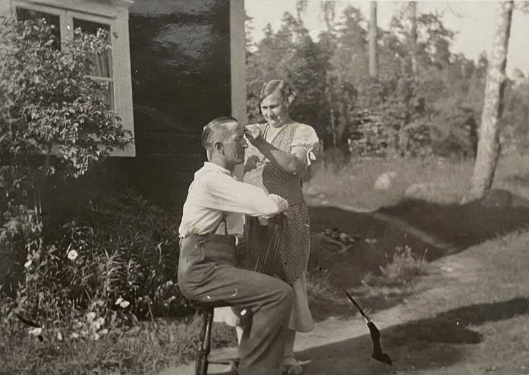

Alva Emelina Brandt f Andersson.

Född 20 maj 1892 i Rosseldalen, Tostebo, Ringarum (E) 16 .
Död 18 dec 1967 i Krokek (E) 2 .
|
Född
9 feb 1890
i Nyborg, Eketorp, Krokek (E)
1
.
Död 9 jul 1962 i Norrköping Krokeks-Eketorp 1:28, Krokek, Krokek (E) 2 . |
|
Johan Martin Brandt
Född 9 feb 1890 i Nyborg, Eketorp, Krokek (E) 1 . Död 9 jul 1962 i Norrköping Krokeks-Eketorp 1:28, Krokek, Krokek (E) 2 . |
|||

Alva Emelina och Johan Martin
|
Gift
8 dec 1934
i Krokek (E)
15
.
Alva Emelina Brandt f Andersson.
Född 20 maj 1892 i Rosseldalen, Tostebo, Ringarum (E) 16 . Död 18 dec 1967 i Krokek (E) 2 . |
Framställd 6 nov 2026 med hjälp av Disgen version 2025.